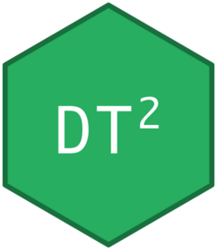

Shiny Integration
DT2 Team
2026-04-07
Source:vignettes/shiny-integration.Rmd
shiny-integration.RmdAll examples below are complete Shiny apps using
bslib with Bootstrap 5. Copy, paste, and run.
Basic Usage
The minimal DT2 Shiny app uses dt2_output() in the UI
and render_dt2() in the server. DT2 tables integrate
naturally with bslib cards and Bootstrap 5 themes — the
table inherits the page theme automatically:
library(shiny)
library(bslib)
library(DT2)
ui <- page_fillable(
theme = bs_theme(version = 5, bootswatch = "flatly"),
padding = "1rem",
card(
card_header("DT2 in Shiny"),
card_body(dt2_output("my_table"))
)
)
server <- function(input, output, session) {
output$my_table <- render_dt2({
dt2(iris, options = list(pageLength = 10))
})
}
shinyApp(ui, server)Reading Table State
Every DT2 table pushes its state (order,
search, page, selected rows) to
input$<id>_state automatically:
library(shiny)
library(bslib)
library(DT2)
ui <- page_fillable(
theme = bs_theme(version = 5, bootswatch = "flatly"),
padding = "1rem",
card(
card_header("Table State"),
card_body(dt2_output("tbl"))
),
card(
card_header("Current state"),
card_body(verbatimTextOutput("state_info"))
)
)
server <- function(input, output, session) {
output$tbl <- render_dt2({
dt2(iris, options = list(pageLength = 10))
})
output$state_info <- renderPrint({
state <- input$tbl_state
if (is.null(state)) return("(interact with the table)")
cat("Reason:", state$reason, "\n")
cat("Page:", state$page$page + 1, "of", state$page$pages, "\n")
cat("Search:", if (nzchar(state$search)) state$search else "(none)", "\n")
cat("Order:", paste(state$order, collapse = ", "), "\n")
})
}
shinyApp(ui, server)Proxy: Server-Side Manipulation
Use dt2_proxy() to update a table without re-rendering
it. This is essential for responsive dashboards: you can replace the
data, change the page, adjust sorting, or update the search filter — all
without the flicker of a full re-render:
library(shiny)
library(bslib)
library(DT2)
ui <- page_sidebar(
theme = bs_theme(version = 5, bootswatch = "flatly"),
title = "Proxy Demo",
sidebar = sidebar(
actionButton("refresh", "Refresh data", class = "btn-sm btn-outline-primary w-100 mb-2"),
actionButton("go_last", "Go to last page", class = "btn-sm btn-outline-primary w-100 mb-2"),
actionButton("sort_sl", "Sort Sepal.Length \u2193", class = "btn-sm btn-outline-primary w-100 mb-2"),
hr(),
textInput("search_text", "Search", placeholder = "e.g. setosa"),
actionButton("search_btn", "Apply", class = "btn-sm btn-primary w-100")
),
card(
card_body(dt2_output("tbl"))
)
)
server <- function(input, output, session) {
output$tbl <- render_dt2({
dt2(iris, options = list(pageLength = 10))
})
proxy <- dt2_proxy("tbl")
observeEvent(input$refresh, {
new_data <- iris[sample(nrow(iris), 50), ]
dt2_replace_data(proxy, new_data)
})
observeEvent(input$go_last, {
dt2_proxy_page(proxy, "last")
})
observeEvent(input$sort_sl, {
dt2_proxy_order(proxy, c("Sepal.Length", "desc"),
columns = names(iris))
})
observeEvent(input$search_btn, {
dt2_proxy_search(proxy, input$search_text)
})
}
shinyApp(ui, server)Buttons with Custom Style
Override the default button appearance with any Bootstrap 5 button
class. The dt2_use_buttons() helper accepts a
button_class parameter that applies to all buttons in the
group. Here, solid primary blue buttons replace the default outlined
style:
library(shiny)
library(bslib)
library(DT2)
ui <- page_fillable(
theme = bs_theme(version = 5, bootswatch = "flatly"),
padding = "1rem",
card(
card_header("Styled Buttons"),
card_body(dt2_output("tbl"))
)
)
server <- function(input, output, session) {
output$tbl <- render_dt2({
opts <- dt2_use_buttons(
buttons = c("copy", "csv", "excel", "print"),
position = "topEnd",
button_class = "btn btn-sm btn-primary"
)
dt2(mtcars, options = opts)
})
}
shinyApp(ui, server)Infinite Scrolling (Scroller)
Use virtual scrolling instead of pagination for large datasets. The
Scroller extension renders only the visible rows inside a fixed-height
container; more rows load seamlessly as the user scrolls. Combined with
deferRender = TRUE, this keeps memory usage low even for
tens of thousands of rows:
library(shiny)
library(bslib)
library(DT2)
ui <- page_fillable(
theme = bs_theme(version = 5, bootswatch = "flatly"),
padding = "1rem",
card(
card_header("Scroller \u2014 10 000 rows"),
card_body(dt2_output("tbl"))
)
)
server <- function(input, output, session) {
big <- data.frame(
id = 1:10000,
value = round(rnorm(10000), 3),
group = sample(LETTERS[1:5], 10000, replace = TRUE)
)
output$tbl <- render_dt2({
dt2(big, options = list(
scroller = TRUE,
scrollY = 400,
deferRender = TRUE,
buttons = list("copy", "csv"),
layout = list(
topStart = list(search = list(placeholder = "Filter...")),
topEnd = "buttons"
)
))
})
}
shinyApp(ui, server)Custom Layout
DataTables v2 uses layout to position toolbar elements
around the table. Each slot (topStart, topEnd,
bottomStart, bottomEnd) accepts a string,
list, or NULL. This example rearranges search, buttons,
info, and pagination into non-default positions:
library(shiny)
library(bslib)
library(DT2)
ui <- page_fillable(
theme = bs_theme(version = 5, bootswatch = "flatly"),
padding = "1rem",
card(
card_header("Custom Layout"),
card_body(dt2_output("tbl"))
)
)
server <- function(input, output, session) {
output$tbl <- render_dt2({
dt2(iris, options = list(
pageLength = 10,
layout = list(
topStart = "pageLength",
topEnd = list(
buttons = list("copy", "csv", "excel"),
search = list(placeholder = "Search...")
),
bottomStart = "info",
bottomEnd = "paging"
)
))
})
}
shinyApp(ui, server)Pagination Types
DataTables v2 configures pagination through the layout
option using paging as a named list, replacing the
deprecated pagingType parameter. This example shows three
common configurations side by side: simple navigation (prev/next only),
full navigation with all elements, and no pagination at all.
library(shiny)
library(bslib)
library(DT2)
ui <- page_fillable(
theme = bs_theme(version = 5, bootswatch = "flatly"),
padding = "1rem",
layout_columns(
col_widths = c(6, 6),
card(
card_header("Simple (prev / next only)"),
card_body(dt2_output("tbl_simple"))
),
card(
card_header("Full (first / 1 2 3 / last)"),
card_body(dt2_output("tbl_full"))
)
),
card(
card_header("No pagination"),
card_body(dt2_output("tbl_none"))
)
)
server <- function(input, output, session) {
output$tbl_simple <- render_dt2({
dt2(iris, options = list(
pageLength = 5,
layout = list(bottomEnd = list(paging = list(
type = "simple"
)))
))
})
output$tbl_full <- render_dt2({
dt2(iris, options = list(
pageLength = 5,
layout = list(bottomEnd = list(paging = list(
firstLast = TRUE, previousNext = TRUE, numbers = TRUE
)))
))
})
output$tbl_none <- render_dt2({
dt2(iris[1:15, ], options = list(paging = FALSE))
})
}
shinyApp(ui, server)Inline Inputs (Checkboxes and Buttons)
DT2 can embed Shiny inputs (checkboxes, action buttons) directly
inside table cells. When the user clicks a checkbox or button, DT2 sends
the event to Shiny via input$<id>_state with
reason = "input". This pattern is useful for row-level
actions like selection, approval workflows, or delete buttons:
library(shiny)
library(bslib)
library(DT2)
ui <- page_fillable(
theme = bs_theme(version = 5, bootswatch = "flatly"),
padding = "1rem",
card(
card_header("Inline Inputs"),
card_body(dt2_output("tbl"))
),
card(
card_header("Events"),
card_body(verbatimTextOutput("events"))
)
)
server <- function(input, output, session) {
df <- data.frame(
name = c("Alice", "Bob", "Carol", "Dave"),
score = c(95, 82, 91, 78),
select = NA,
action = NA
)
output$tbl <- render_dt2({
opts <- list(columns = names(df), pageLength = 10)
opts <- dt2_col_checkbox(opts, "select")
opts <- dt2_col_button(opts, "action", label = "View")
dt2(df, options = opts)
})
event_log <- reactiveVal("")
observeEvent(input$tbl_row_check, {
info <- input$tbl_row_check
msg <- paste0("Checkbox row ", info$row, ": ", info$value, "\n")
event_log(paste0(event_log(), msg))
})
observeEvent(input$tbl_row_button, {
info <- input$tbl_row_button
msg <- paste0("Button clicked row ", info$row, "\n")
event_log(paste0(event_log(), msg))
})
output$events <- renderText(event_log())
}
shinyApp(ui, server)Server-Side Processing
For very large datasets (100k+ rows), use server-side processing. Only the visible page is sent to the browser — sorting, filtering, and pagination happen on the R server. This avoids sending the entire dataset to the client, dramatically improving initial load time:
library(shiny)
library(bslib)
library(DT2)
ui <- page_fillable(
theme = bs_theme(version = 5, bootswatch = "flatly"),
padding = "1rem",
card(
card_header("Server-Side Processing \u2014 100k rows"),
card_body(dt2_output("tbl"))
)
)
server <- function(input, output, session) {
large_data <- data.frame(
id = seq_len(100000),
value = round(rnorm(100000), 4),
group = sample(LETTERS[1:5], 100000, replace = TRUE)
)
dt2_bind_server("tbl", large_data)
output$tbl <- render_dt2({
dt2(large_data, options = list(
columns = names(large_data),
pageLength = 25,
server_side = TRUE,
language = list(info = "Showing _START_ to _END_ of _TOTAL_ rows")
))
})
}
shinyApp(ui, server)Dataset Switcher with bslib
A common dashboard pattern: let the user choose a dataset and a theme
preset from the sidebar. The table re-renders reactively whenever either
input changes. This demonstrates how DT2 integrates naturally with
bslib’s page_sidebar() layout:
library(shiny)
library(bslib)
library(DT2)
ui <- page_sidebar(
theme = bs_theme(version = 5, bootswatch = "flatly"),
title = "DT2 + bslib",
sidebar = sidebar(
selectInput("dataset", "Dataset",
c("iris", "mtcars", "airquality")),
selectInput("theme_preset", "Theme preset",
c("default", "clean", "minimal", "compact"))
),
card(
card_header("Table"),
card_body(dt2_output("tbl"))
)
)
server <- function(input, output, session) {
output$tbl <- render_dt2({
data <- switch(input$dataset,
iris = iris,
mtcars = mtcars,
airquality = airquality
)
dt2(data,
theme = input$theme_preset,
options = list(pageLength = 10))
})
}
shinyApp(ui, server)Shared Theme Across Tables
Define a theme once with dt2_theme() and reuse it across
all tables in your app. This ensures consistent font scaling, button
styling, and compactness without repeating configuration. Changes
propagate instantly to every table that uses the theme:
library(shiny)
library(bslib)
library(DT2)
my_theme <- dt2_theme("clean",
compact = TRUE,
font_scale = 0.85,
button_class = "btn btn-sm btn-outline-dark"
)
ui <- page_fillable(
theme = bs_theme(version = 5, bootswatch = "flatly"),
padding = "1rem",
layout_columns(
col_widths = c(6, 6),
card(
card_header("iris"),
card_body(dt2_output("tbl1"))
),
card(
card_header("mtcars"),
card_body(dt2_output("tbl2"))
)
)
)
server <- function(input, output, session) {
output$tbl1 <- render_dt2({
dt2(iris, theme = my_theme, options = dt2_use_buttons(
buttons = c("copy", "csv")
))
})
output$tbl2 <- render_dt2({
dt2(mtcars, theme = my_theme, options = list(pageLength = 15))
})
}
shinyApp(ui, server)Complete Example: Custom Renderers, Flags, and ColumnControl
This Shiny app demonstrates most DT2 features together: ColumnControl dropdowns, export buttons with spacer, custom JS renderers (links, flags, progress bars, colored currency), and full pt-BR translation.
Copy and run it directly — it is also available at
system.file("examples/app_complete.R", package = "DT2").
library(jsonlite)
library(dplyr)
library(tibble)
library(lubridate)
# ── Sample data (57 employees) ────────────────────────────────────────────────
json_url <- "https://raw.githubusercontent.com/StrategicProjects/DT2/main/inst/examples/employees.json"
# For offline use, the same JSON is bundled in inst/examples/employees.json
json_txt <- '{
"data": [
{"name":"Tiger Nixon","position":"System Architect","salary":"320800","start_date":"2011-04-25","office":"Edinburgh","extn":"5421"},
{"name":"Garrett Winters","position":"Accountant","salary":"170750","start_date":"2011-07-25","office":"Tokyo","extn":"8422"},
{"name":"Ashton Cox","position":"Junior Technical Author","salary":"86000","start_date":"2009-01-12","office":"San Francisco","extn":"1562"},
{"name":"Cedric Kelly","position":"Senior JavaScript Developer","salary":"433060","start_date":"2012-03-29","office":"Edinburgh","extn":"6224"},
{"name":"Airi Satou","position":"Accountant","salary":"162700","start_date":"2008-11-28","office":"Tokyo","extn":"5407"},
{"name":"Brielle Williamson","position":"Integration Specialist","salary":"372000","start_date":"2012-12-02","office":"New York","extn":"4804"},
{"name":"Herrod Chandler","position":"Sales Assistant","salary":"137500","start_date":"2012-08-06","office":"San Francisco","extn":"9608"},
{"name":"Rhona Davidson","position":"Integration Specialist","salary":"327900","start_date":"2010-10-14","office":"Tokyo","extn":"6200"},
{"name":"Colleen Hurst","position":"JavaScript Developer","salary":"205500","start_date":"2009-09-15","office":"San Francisco","extn":"2360"},
{"name":"Sonya Frost","position":"Software Engineer","salary":"103600","start_date":"2008-12-13","office":"Edinburgh","extn":"1667"}
]
}'
df <- fromJSON(json_txt, flatten = TRUE)$data %>%
as_tibble() %>%
mutate(
salary = as.numeric(salary),
extn = as.integer(extn),
start_date = ymd(start_date)
)
# ── Shiny App ─────────────────────────────────────────────────────────────────
library(shiny)
library(bslib)
library(DT2)
library(htmlwidgets)
ui <- page_sidebar(
theme = bs_theme(version = 5, bootswatch = "spacelab"),
title = "DT2 — Complete Example",
sidebar = sidebar(
h5("Features"),
tags$ul(
tags$li("ColumnControl (order + search dropdowns)"),
tags$li("Export buttons with spacer"),
tags$li("Custom JS renderers"),
tags$li("pt-BR translation")
)
),
# Flag sprites
tags$head(
tags$link(
rel = "stylesheet", type = "text/css",
href = "https://cdn.jsdelivr.net/gh/lafeber/world-flags-sprite/stylesheets/flags32-both.css"
),
tags$style(HTML("
.f32 .flag { display:inline-block; width:32px; height:32px;
vertical-align:middle; margin-right:6px; }
table.dataTable tbody td { vertical-align: middle; }
"))
),
card(
card_header("Employee Table"),
card_body(dt2_output("tbl", height = "auto"))
)
)
server <- function(input, output, session) {
output$tbl <- render_dt2({
# ── JS Renderers ──────────────────────────────────────────
office_js <- JS("
function(data, type) {
if (type !== 'display') return data;
var cc = {Argentina:'ar', Edinburgh:'_Scotland', London:'_England',
'New York':'us', 'San Francisco':'us', Sydney:'au', Tokyo:'jp'};
var flag = cc[data] || '';
return '<span class=\"flag ' + flag + '\"></span> ' + data;
}
")
salary_js <- JS("
(function() {
var nfmt = DataTable.render.number('.', ',', 2, 'R$ ');
return function(data, type) {
var txt = nfmt.display(data);
if (type !== 'display') return txt;
var c = data < 250000 ? 'red' : data < 500000 ? 'orange' : 'green';
return '<span style=\"color:' + c + '\">' + txt + '</span>';
};
})()
")
extn_js <- JS("
function(data, type) {
return type === 'display'
? '<progress value=\"' + data + '\" max=\"9999\"></progress>'
: data;
}
")
# ── Options ───────────────────────────────────────────────
opts <- list(
pageLength = 10,
lengthMenu = c(10, 25, -1),
columns = names(df),
layout = list(
topStart = "pageLength",
topEnd = list(
buttons = list(
list(extend = "copyHtml5", text = "Copiar"),
list(extend = "csvHtml5"),
list(extend = "excelHtml5"),
list(extend = "spacer", style = "bar"),
list(extend = "colvis", text = "Colunas")
),
search = list(placeholder = "")
),
bottomEnd = "paging"
),
columnControl = list(
target = 0,
content = list("order", "searchDropdown", list(
list(extend = "orderAsc", text = "Ordem crescente"),
list(extend = "orderDesc", text = "Ordem decrescente"),
"spacer",
list(extend = "colVisDropdown", text = "Selecionar colunas")
))
),
ordering = list(indicators = FALSE, handler = FALSE),
columnDefs = list(
list(targets = which(names(df) == "office") - 1L,
className = "f32", render = office_js),
list(targets = which(names(df) == "salary") - 1L,
className = "dt-body-right", render = salary_js),
list(targets = which(names(df) == "extn") - 1L,
render = extn_js)
),
language = list(
lengthMenu = "Mostrar _MENU_",
search = "Buscar",
info = "Mostrando _START_ a _END_ de _TOTAL_ registros",
infoEmpty = "Nenhum registro",
zeroRecords = "Nenhum registro encontrado",
emptyTable = "Nenhum dado disponível",
decimal = ",", thousands = ".", infoThousands = ".",
lengthLabels = list(`10` = "10", `25` = "25", `-1` = "Todas"),
paginate = list(first="«", previous="‹", `next`="›", last="»"),
buttons = list(
copyTitle = "Copiado!",
copySuccess = list(`_` = "%d linhas copiadas", `1` = "1 linha copiada")
),
columnControl = list(
orderAsc = "Crescente", orderDesc = "Decrescente",
searchDropdown = "Pesquisar", colVisDropdown = "Colunas",
searchClear = "Limpar",
search = list(
text = list(contains="Contém", starts="Começa por",
ends="Termina em", equal="Igual a"),
number = list(greater="Maior que", less="Menor que",
equal="Igual a")
)
)
)
)
dt2(df,
compact = TRUE, striped = TRUE, hover = TRUE,
font_scale = 0.85, responsive = FALSE,
options = opts)
})
}
shinyApp(ui, server)